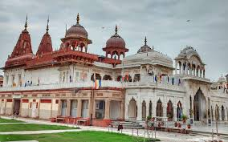
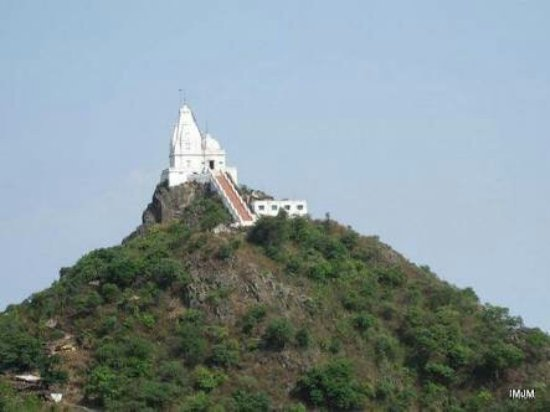

MY favorite travel destinations
-

- Shri Mahavirji Jain Temple, Rajasthan
- The Shri Mahavirji Jain Temple is situated in the district of Karauli in Rajasthan. The main deity here is that of the last and 24th Jain Thirthankara, Mahavira Bhagawan. This was established more than 200 years ago, thus it holds special significance for those who follow the tradition of Digambar in Jainism.
-

- Shikharji jain temple, Jharkhand
- Shikharji (Śikharjī), also known as Sammet or Sammed Shikharji, is one of the holiest pilgrimage sites for Jains, in Giridih district, Jharkhand. It is located on Parasnath hill, the highest mountain in the state of Jharkhand.It is the most important Jain Tirtha (pilgrimage site), for it is the place where twenty of the twenty-four Jain tirthankaras (supreme preachers of Dharma) along with many other monks attained Moksha. It is one of the five principal pilgrimage destinations along with Girnar, Pawapuri, Champapuri, Dilwara, Palitana and Ashtapad Kailash.
-
4
- The Ahichchhatra Jain temple,Uttar Pradesh
- The Ahichchhatra Jain temples is a group of Jain temples in Ahichchhatra village in Aonla tehsil of Bareilly district in Uttar Pradesh, North India. Ahichchhatra is believed to be the place where Parshvanatha, the 23rd Tirthankar of Jainism, attained Kevala Jnana.